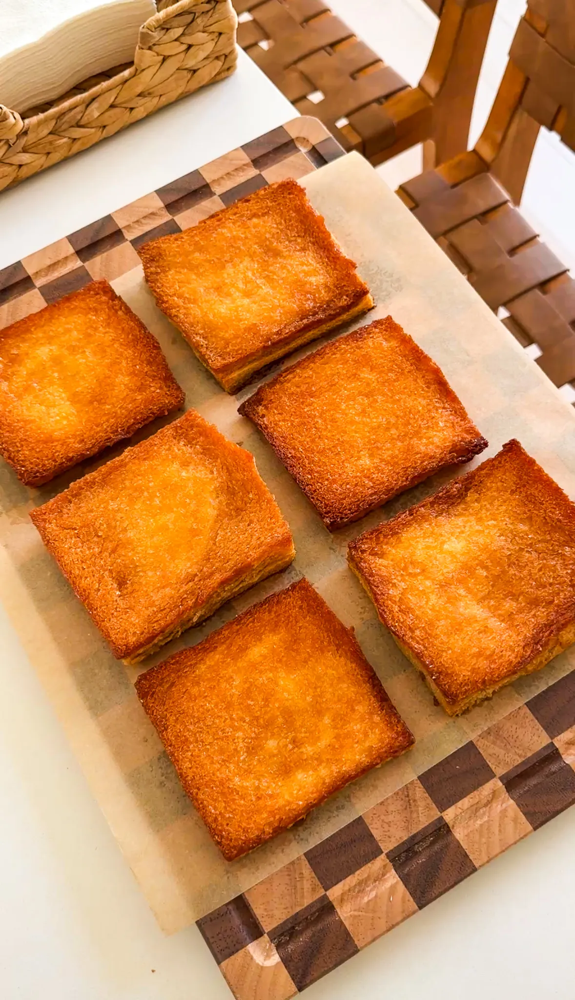

PREP TIME: 10 minutes
COOK TIME: 20 minutes
TOTAL TIME: 30 minutes
YIELD: 6
When that late-night sweet tooth hits and you’ve got nothing on hand, this is the answer. Made with simple pantry staples, it’s a breeze to whip up—just bread, butter, honey, and sugar magic. Crispy on the outside, soft and fluffy on the inside, it tastes like a kouign-amann but a million times easier—croissant dough with caramelized sugar and butter between each layer, all without the fuss!
Jump to RecipeYou know those nights when your sweet tooth hits hard, but there’s nothing in the house and you don’t feel like running to the store? This is that perfect late-night fix. You probably already have everything on hand—just some basic pantry staples and a few slices of bread—and in under 30 minutes, you’ve got a warm, sticky, caramelized treat that tastes way fancier than it has any right to be.
These are inspired by a Japanese dessert that uses shokupan, a oft and fluffy milk bread that’s basically the gold standard of white bread. It’s pillowy and rich, but still holds its structure when baked, making it ideal for soaking up all that buttery syrupy goodness. You can usually find shokupan at a local Japanese bakery, or if you’re like me and love a grocery shortcut, check out Weee!—they deliver it right to your door and it’s always fresh.
If you’ve ever had kouign-amann, you know it’s one of the best pastries on earth. Layers of croissant dough with caramelized sugar and butter baked in between? Pure magic. But making them at home is a whole thing—laminating dough, folding, chilling… nope. This recipe gives you that same vibe with none of the work. The outside gets golden and crispy, while the inside stays soft and fluffy, and it all tastes like it came straight from a pastry shop in Paris.
Honestly, it’s dangerously easy. You might start making these way too often.
Let’s talk bread, because it makes a difference. Japanese milk bread is definitely the best option—shokupan has that perfect balance of softness and strength, so it holds up when baked in all that buttery syrup. If you can’t find it, white sandwich bread works great too. Just avoid anything too soft, like fresh Wonder Bread, which tends to fall apart and get soggy. The softer it is, the harder it will be also to dip in the honey butter.
If you’re using standard thin sandwich bread, you’ll want to use twelve slices and stack them two at a time to get that thicker bite. If you don’t care to have a thicker bite, just use six slices and skip the stacking. Now if you’ve got a full uncut loaf, slice it yourself into thick pieces, somewhere between one and a half to two inches is perfect. Brioche is another option, and it still turns out super delicious, but keep in mind that it’s often so soft and rich that it sinks a little in the center after baking. Still buttery and caramelized and amazing—just a different texture!
Start by cutting the crusts off your bread slices for that clean, bakery-style edge. Then melt some butter and mix it with honey, brown sugar, vanilla, and a pinch of salt. Give it a quick zap in the microwave and whisk it really well until it turns into a smooth syrup that’s glossy and rich.
Now for the fun part: dip each slice of bread into the syrup and coat it on all sides. Be generous—you want every inch of that bread soaking up flavor. Arrange the coated slices in a nonstick baking pan (no parchment paper needed) and bake them in the oven until golden and bubbling. Flip them once carefully about 15 minutes in to get both sides nice and caramelized.
When they first come out, they’ll feel soft and you might think they’re underbaked—but don’t worry. Let them cool for about 10 minutes and they’ll crisp up beautifully as they sit and the sugar hardens. That’s when the magic really happens.
This recipe is super flexible! Want fall vibes? Add a pinch of cinnamon or pumpkin spice to the syrup. I also love topping it off with a big spoonful of fresh whipped vanilla bean cream, some fresh berries, or even a quick berry compote if I have extra fruit lying around. It’s super flexible, so use what you have and make it your own.
If you tried this recipe and loved it, drop by down below and let me know how you liked it with a rating and comment! Feel free to lso leave a question there about this recipe and I’ll get right back to it.
To see more recipes and behind-the-scenes, follow along on Instagram and Youtube! I’m also now on Pinterest pinning away so stop by and see what’s up.